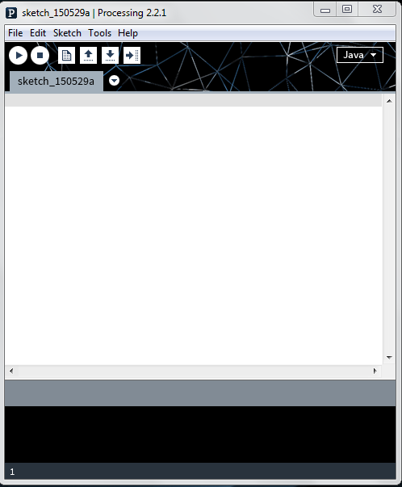
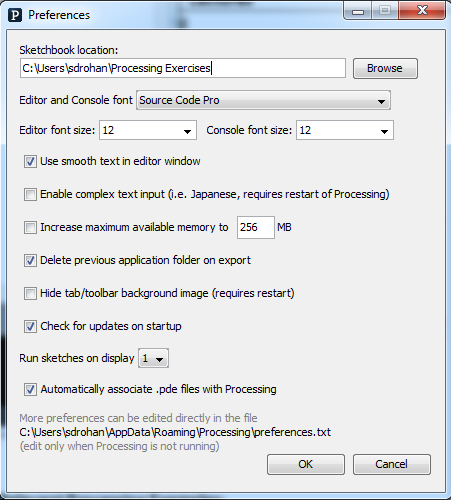
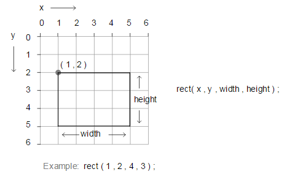
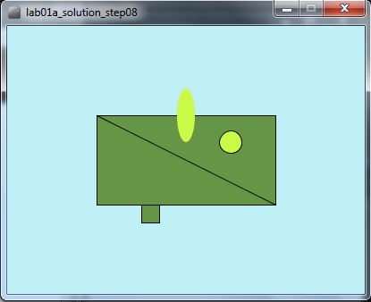

Objectives
On completion of this lab you should:
be familiar with the PDE (Processing Development Environment).
be able to use methods to draw basic shapes and add colour to these shapes.
Lab advice
Your labs are not a race to be the first student finished.
It is very important that you:
- take your time.
- read the instructions carefully.
- ask your lecturer to explain concepts that you don't understand; that is what we are here for!
- attend ''ALL'' your classes; attendance will be taken.
Where code is given in labs, don't cut and paste it; maximise your learning by typing the code in.
Installing the PDE (Processing Development Environment)
- If you are using your own laptop and would like to install the PDE on it, please follow the instructions in this step.
- If you are using the WIT computers, you can ignore this step and move onto the next step.
Downloading the PDE
- The PDE can be downloaded from https://processing.org/. It is free, but you can choose to make a donation if you wish.
- Choose the version of the
- A zip file will start to download. When this file has downloaded:
- Decide where you are going to store your Programming applications on your computer. It is a good idea to create a folder called dev on your C:\ and store all your applications in there.
- Unzip the downloaded processing file to your chosen location. Note: if you don’t have unzipping software, 7-zip is a good choice and can be downloaded from here: http://www.7-zip.org/.
- You should now have a folder structure resembling this picture:
Opening the PDE (Processing Development Environment)
- Open Windows Explorer by holding down the windows key and pressing the letter E once.
- When Windows Explorer opens, double click on:
- the C:
- then the dev folder
- then the processing folder
- then the processing-2.2.1 folder
You should see a list of files and folders similiar to the picture below:
Double click in the processing application (highlighted by the red rectangle).
The PDE (Processing Development Environment) should launch.

Setting your Sketchbook location
- As you work through the exercises in this lab, you will create many new files. These files are called Sketchbooks.
- It is important that you pick a convenient location on your computer to save these sketchbook files to. The following steps show you how to do this.
Updating your Sketchbook location
- If you don't have Processing open, launch it (see the previous step for the steps involved).
- From the File menu, select the Preferences menu item.
- The following window should appear.

- In the Sketchbook location, enter a location that is convenient to you. If you are using:
- the college computers, it could be your G:\ (personal networked drive that is accessible only using college computers) or a USB drive (remember to back up your work if you are using a portable drive).
- your own laptop, choose a convenient location where you will store all your programming exercises.
- Click the OK button.
The Sketchbook location
- All your work can now be accessed easily by selecting the Sketchbook option from the File menu. An example of previous Sketchbook work could look like this:
Drawing Simple Shapes
- We will use the following built-in functions to draw simple shapes:
- rect()
- line()
- ellipse()
Drawing Rectangles
- The syntax of the rect function is:
rect(x, y, w, h)
x = x-coordinate of the upper left corner of the rectangle
y = y-coordinate of the upper left corner of the rectangle
w = width of the rectangle
h = height of the rectangle- Note that, in computing, the coordinates start in the top left hand corner i.e. (0,0) is in the top left of the screen. In the following picture, you can see the coordinates of the rectangle (1,2) along with its width (4) and height (3).

- Enter the following code in your sketchbook:
rect(20,30,50,30);- Run the code, by clicking on the play button (highlighted in red in the screen shot below):
- The following window should appear with a rectangle that:
- starts at the (x,y) coordinates (20,30) [measured in pixels]
- has a width of 50 pixels
- has a height of 30 pixels

Drawing Squares
Using the rect() function, you can draw squares. Just set the width and height to the same number of pixels.
Below the code you wrote previously, try drawing a square that has starts at the (x,y) coordinates of (40,5) and has a length of 20.
Run the code. Did a square appear?

Drawing Simple Shapes(contd.)
- Using rect(), line() and ellipse().
Drawing Lines
- The syntax of the line function is:
line(x1, y1, x2, y2)
x1 = x-coordinate of first point
y1 = y-coordinate of first point
x2 = x-coordinate of second point
y2 = y-coordinate of second point- In the following picture, you can see an example of a line.

- Enter the following code in your open sketchbook:
line(5,30,20,90);- When you run the code, you should see the following line that starts at (5,30) and ends at (20,90):

Drawing Simple Shapes(contd.)
- Using rect(), line() and ellipse().
Drawing Ellipses
For our purposes here, we will define an ellipse as a basic oval shape.
The syntax of the ellipse function is:
ellipse(x, y, w, h)
x = x-coordinate at the centre of the ellipse
y = y-coordinate at the centre of the ellipse
w = width of the ellipse
h = height of the ellipse- In the following picture, you can see an example of an ellipse.

- Enter the following code in your open sketchbook:
ellipse(85,50,20,60);- When you run the code, you should see the following ellipse whose centre is (85,50) and is 20 pixels wide and 90 high.

Drawing Circles
Using the ellipse() function, you can draw circles. Just set the width and height to the same number of pixels.
Try drawing a cicle that has the coordinates (50,80) at its centre and has a diameter of 15 pixels.
Run the code. Did a circle appear?

Changing the look of the display window
- You should have the following code in your open sketchbook:
rect(20,30,50,30);
rect(40,5,20,20);
line(5,30,20,90);
ellipse(85,50,20,60);
ellipse(50,80,15,15);- When it runs, you should have something that looks like this:
- We can see that the available space in the window is at a minimum and the window is quite small. There is also no added colour. We will make changes to this code to make the window larger and add colour.
size() function
The size() function sets the size of the display window in pixels. It has to be the first line of code in your sketchbook (there is an exception to this that we will cover later).
The syntax of the size function is:
size(w, h)
w = width of the ellipse
h = height of the ellipseIf the size function is not called, the window will be set to a default size of 100x100 pixels.
Enter the following code in your open sketchbook:
size(400,300);- Run your code; your window should now be larger.
background() function
The background() function sets the background colour of the display window.
The syntax of the background function is:
background(r,g,b)
r = red colour (a number between 0 and 255 inclusive)
g = green colour (a number between 0 and 255 inclusive)
b = blue colour (a number between 0 and 255 inclusive)The background function uses a combination of RGB (red, green and blue) values to display a colour on the window.
Visit the following website and choose a colour you like:
In your open sketchbook (after the size() function), type in the background() function, passing the RGB values for your selected colour as parameters.
For example, we chose a light blue:
background(190,240,245);
Changing the look of the shapes
- You should have the following code (or something similar) in your open sketchbook:
size(400,300);
background(190,240,245);
rect(20,30,50,30);
rect(40,5,20,20);
line(5,30,20,90);
ellipse(85,50,20,60);
ellipse(50,80,15,15);- When it runs, you should have something that looks like this:
- Change the coordinates of your shapes and the size of your rectangle so that your output is similar to the following screen shot:
fill() function
The fill() function fills shapes with a chosen colour. We will use the RGB colours to select a colour. All shapes that are drawn after the fill function is called, will be filled with the chosen colour.
The syntax of the fill function is similar to the background function and is:
fill(r,g,b)
r = red colour (a whole number between 0 and 255 inclusive)
g = green colour (a whole number between 0 and 255 inclusive)
b = blue colour (a whole number between 0 and 255 inclusive)- In your open sketchbook, enter the following code before your draw any shapes:
fill(100,150,70);Run your code; all your shapes should be coloured dark green.
Now we will set the ellipses to be a different colour i.e. light green. Enter the following code before your first ellipse() function call.
fill(200,250,70);Order of statements matter
- Note how the order of statements matter. All shapes drawn after the first fill() function is called are coloured dark green. All shapes drawn after the second fill() function is called are coloured light green (see picture below):
Try moving the first ellipse() function call before the second fill() function call. What happened? Only the second ellipse is coloured light green.
Move the ellipse function back to it's original location so both ellipses are coloured light green.
noStroke() function
A stroke is the outline of a shape. The noStroke() function disables the outline on shapes that are drawn after the function is called.
In your open sketchbook, enter the following code before your draw any shapes:
noStroke();- When you run your code, you should have something similar to this:
stroke() function
The stroke() function enables the outline on shapes that are drawn after the function is called. When you call stroke(), you need to specify a colour.
The syntax of the stroke function is also similar to the fill and background function and is:
stroke(r,g,b)
r = red colour (a whole number between 0 and 255 inclusive)
g = green colour (a whole number between 0 and 255 inclusive)
b = blue colour (a whole number between 0 and 255 inclusive)If we wanted all shapes except the first ellipse (the oval) to have a stroke, you should make the following changes:
- remove the call to noStroke() that you put into your code in the previous step.
- call noStroke() before the first ellipse is drawn.
- call stroke(0,0,0) before the second ellipse is drawn to enable a black stroke on the second ellipse.
Your output should look similar to this:

strokeWeight() function
The strokeWeight() function allows you to choose the thickness of a line/outline on shapes. The chosen thickness will apply to all lines/shapes that are drawn after the function is called. The thickness is specified in pixels and the default thickness is 1 pixel.
If we wanted all shapes to have thickness of 3 pixels, enter the following code before you draw any shapes:
strokeWeight(3);- Your output should look similar to this:
Exercises
- The exercises are typically based on the functions we covered in the previous steps in this lab.
- For each exercise listed below, open a new sketchbook.
- For the challenge exercises you may need to visit the Processing website for additional information.
- When you are finished all your exercises, zip all your exercises into one file and upload them into lab01 dropbox in Moodle.
Exercise 1
- Draw a stick man as shown in the picture below:

Exercise 2
- Replicate the basic Microsoft logo as shown in the picture below:

- Hint: You could use this website to find the exact Microsoft RGB colours in their logo.
Exercise 3
- Replicate the beats (Dr. Dre) logo as shown in the picture below:

Challenge Exercise 1
- Convert the Microsoft logo into a grayscale logo as shown in the picture below:

- Hint: the easiest way to do this is to use the grayscale fill function as opposed to the RBG version of it. The grayscale version of fill takes one parameter, a number between 0 and 255 inclusive. This numver represents a shade of gray between black (0) and white (255) e.g.:
fill(150); //sets a medium gray colour for all shapes drawn after it
fill(0); //sets a black colour for all shapes drawn after it
fill(255); //sets a white colour for all shapes drawn after itChallenge Exercise 2
- Write the code that will draw the typical control buttons you would see on a DVD player. An example image would be:

- Hint: you will need to read up on the triangle() function on the Processing website.
Challenge Exercise 3
- Draw any picture you fancy as your profile picture for Moodle.
- Change your Moodle profile picture to a screen shot of this picture by Friday this week.